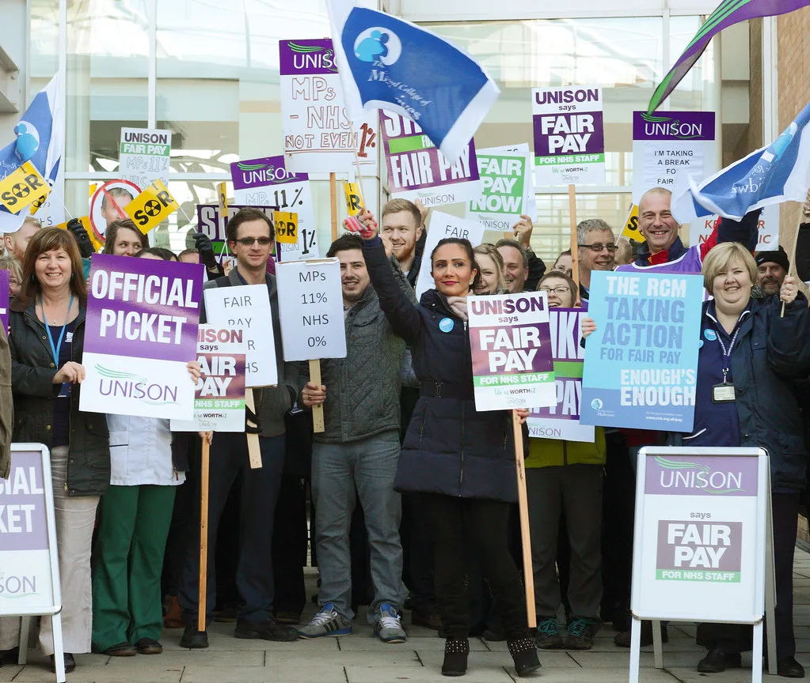

금융노조 9월 4일 총파업 예고…주 4.5일제·국책은행 지방이전이 쟁점
전국금융산업노동조합(금융노조)이 9월 4일 총파업에 들어간다고 예고했다. 금융노조는 금융기관의 지방 이전 중단과 주 4.5일제 도입, 임금 인상 등을 요구하며 사용자 측과 벌여 온 산업별 교섭이 성과 없이 마무리되자 파업 카드를 꺼냈다. 총파업이 현실화하면 시중은행과 국책은행 등 상당수 금융회사 직원이 하루 동안 업무에서 손을 뗄 가능성이 있다.
앞서 금융노조가 실시한 쟁의행위 찬반투표에서는 투표에 참여한 조합원의 96.1%가 파업에 찬성했다. 금융노조에는 시중은행과 지방은행, 산업은행·기업은행·수출입은행 등 국책은행을 비롯해 신용보증기금, 기술보증기금, 한국자산관리공사, 한국주택금융공사, 금융결제원 등 42개 지부가 소속돼 있다. 조합원 수만 명이 참여하는 금융권 최대 규모의 산업별 노조다. 산업별 교섭은 개별 기업이 아니라 업종 차원에서 임금과 근로조건을 한꺼번에 정하는 방식으로, 금융권에서는 사용자 단체와 노조가 매년 교섭 테이블에 마주 앉는다.
핵심 요구 가운데 하나는 주 4.5일제, 즉 주당 근로시간을 35시간으로 줄이는 방안이다. 노조는 디지털 전환으로 점포와 인력이 줄어드는 상황에서 노동시간 단축이 필요하다는 논리를 편다. 반면 사용자 측은 인건비 부담과 고객 서비스 공백을 이유로 난색을 보이고 있다. 근로시간 단축은 금융권을 넘어 산업 전반의 노동 현안과 맞물려 있어 이번 협상의 최대 쟁점으로 꼽힌다. 노동시간 단축은 이재명 정부도 정책 방향으로 언급해 온 사안이어서, 금융권 협상 결과가 다른 업종에 미칠 파급도 주목된다.
국책은행의 지방 이전 문제도 갈등의 축이다. 산업은행 본점의 부산 이전을 비롯해 정부가 추진해 온 공공기관 지방 이전 계획에 해당 기관 노조들은 강하게 반발해 왔다. 산업은행·기업은행·수출입은행 노조는 국책은행 이전에 공동 대응하기로 하고 별도의 반대 집회를 열기도 했다. 노조는 이전이 금융 경쟁력과 직원 생활권을 훼손한다고 주장하는 반면, 정부와 지방자치단체는 지역 균형발전 효과를 강조한다.
임금 인상률을 둘러싼 견해차도 좁혀지지 않고 있다. 노조는 물가 상승과 실질임금 하락을 근거로 6%대 인상을 요구하고 있으나, 사용자 측은 이보다 크게 낮은 수준을 제시한 것으로 알려졌다. 산업별 교섭이 결렬되면서 노조는 쟁의 조정 절차를 거쳐 합법적으로 파업할 수 있는 요건을 갖췄다. 노조는 이번 총파업 이후에도 요구가 받아들여지지 않으면 추가 파업에 나설 수 있다는 뜻을 내비쳤다.

총파업이 예정대로 진행되면 은행 창구 업무와 대출 상담, 기업 금융 등에서 일시적인 차질이 빚어질 수 있다. 다만 인터넷뱅킹과 현금자동입출금기(ATM), 모바일 앱 등 비대면 채널은 정상 가동되고, 각 은행이 대체 인력을 배치해 영업점을 유지할 것으로 예상된다. 과거 사례를 보면 실제 파업 참여율이 투표 찬성률보다 낮은 경우가 많아, 고객이 느끼는 불편은 제한적일 수 있다는 전망도 나온다. 각 은행은 파업 당일 영업점 운영 계획과 대체 창구 이용 방법을 사전에 안내할 것으로 보인다.
금융노조와 사용자 측은 파업 예정일을 앞두고 막판 교섭 가능성을 열어두고 있다. 정부는 파업이 금융 이용자에게 피해를 주지 않도록 대응한다는 방침이면서도, 근로시간 단축과 공공기관 이전은 사회적 합의가 필요한 사안이라는 입장이다. 이번 총파업은 정기국회가 시작된 직후에 예정돼 있어, 국책은행 이전과 노동시간 단축을 둘러싼 논의가 국회로 옮겨붙을 가능성도 있다.